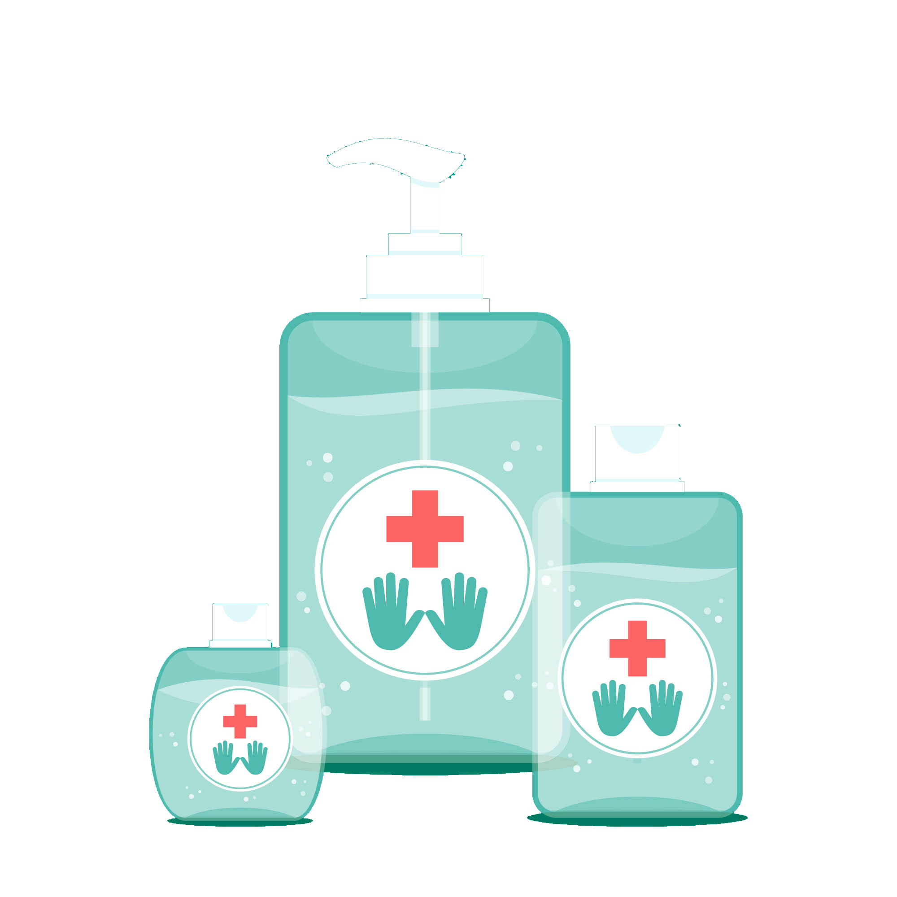
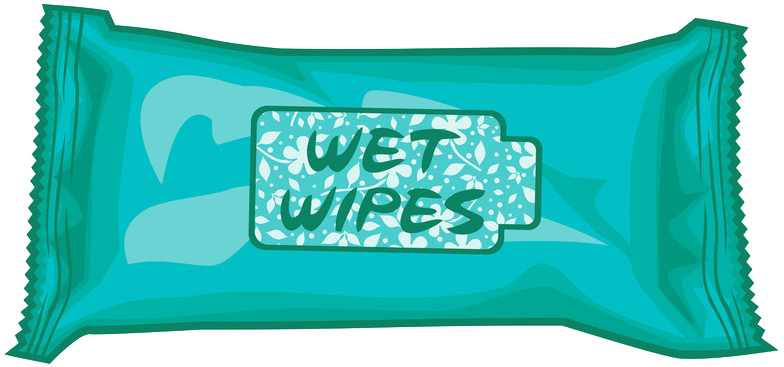
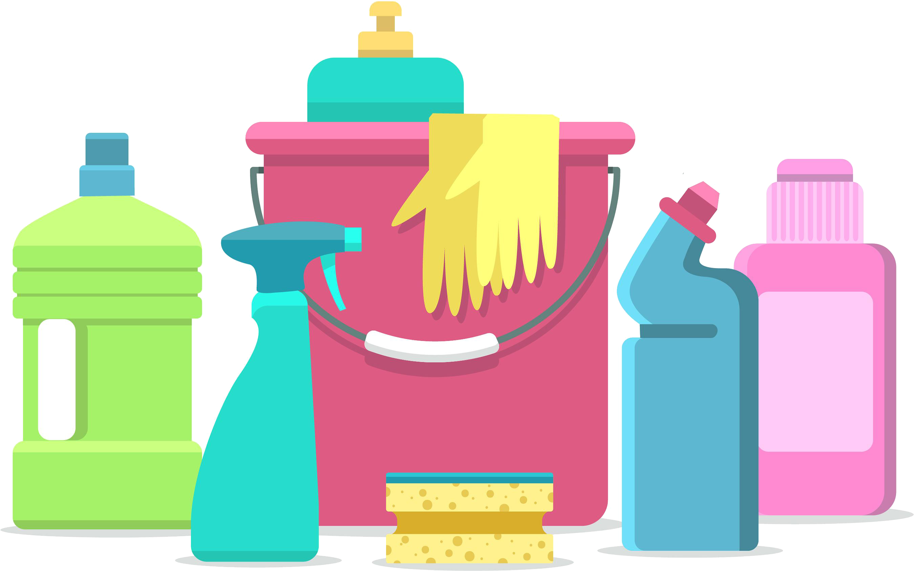
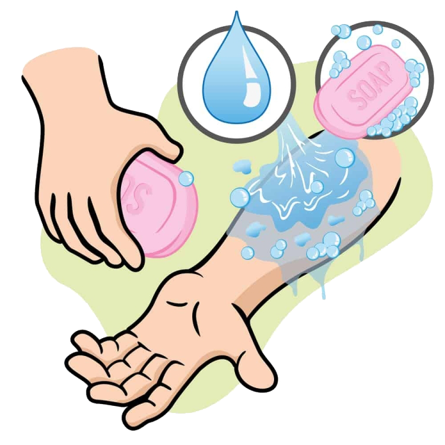
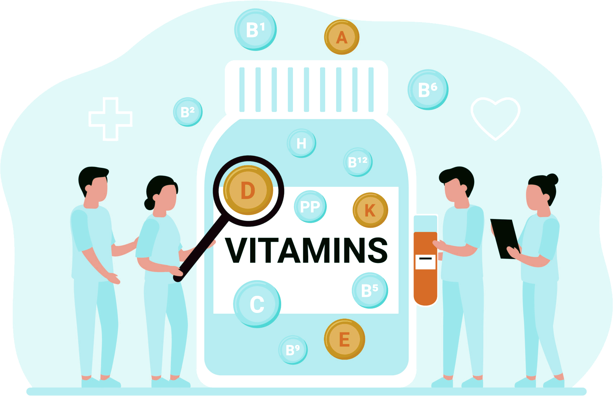
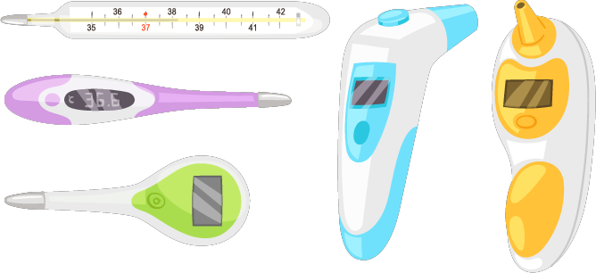
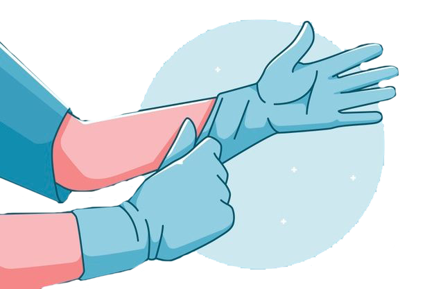

What is Virus?
A virus is a microscopic infectious agent that requires a host cell to replicate and multiply. It is composed of genetic material, either DNA or RNA, surrounded by a protective protein coat called a capsid. Viruses lack the cellular machinery necessary for metabolic processes and energy production, making them reliant on host cells for their survival and reproduction. Viruses can infect a wide range of living organisms, including animals, plants, fungi, bacteria, and archaea. They are responsible for various diseases in humans, animals, and plants, ranging from the common cold to more severe conditions such as influenza, HIV/AIDS, and COVID-19. The life cycle of a virus typically involves attachment to a host cell, entry into the cell, replication of its genetic material, assembly of new virus particles, and release to infect other cells. The ability of viruses to mutate and evolve rapidly poses challenges in developing effective treatments and vaccines. Antiviral medications and vaccines are often designed to target specific stages of the viral life cycle or the host's immune response to mitigate the impact of viral infections.Viruses come in various shapes and sizes, and their classification is based on factors such as their genetic material, structure, and replication strategy. While some viruses have a simple structure, others exhibit complex arrangements, including envelopes derived from the host cell membrane.

HEALTH CARE PRODUCTS:
It's important to note that while some products may claim to protect against viruses, the most effective measures for virus prevention generally involve practicing good hygiene, maintaining a healthy lifestyle, and following recommended guidelines from health authorities. Additionally, vaccines play a crucial role in preventing certain viral infections. Here are some products commonly used for health and hygiene, though their effectiveness against specific viruses may vary:
Hand Sanitizers:
Use: Hand sanitizers are alcohol-based solutions or gels that can be applied to the hands when soap and water are not available. The alcohol content (usually at least 60%) helps kill a variety of germs, including viruses, on the skin.
Face Masks:

Use: Face masks, particularly surgical masks and N95 respirators, are designed to prevent the transmission of respiratory droplets. They act as a barrier to protect the wearer and others from inhaling potentially infectious particles. N95 respirators provide a higher level of filtration.
Disinfectant Wipes:
Use: Disinfectant wipes are pre-moistened with cleaning solutions that can be used to wipe down surfaces. They are effective in disinfecting commonly touched areas, such as doorknobs, light switches, and electronic devices.
Surface Disinfectants:
Use: Surface disinfectants come in various forms, including sprays and liquids. They contain chemicals that kill or neutralize viruses and bacteria on surfaces. Follow the product instructions for proper application and contact time.
Hand Soap:
Use: Proper handwashing with soap and water is a fundamental hygiene practice. The friction created by rubbing hands together while using soap helps remove dirt, grease, and viruses from the skin. It is recommended to wash hands for at least 20 seconds.
UV-C Light Sanitizers:

Use: UV-C light has germicidal properties that can deactivate the DNA and RNA of viruses and bacteria. UV-C light sanitizers are used to disinfect surfaces and objects by exposing them to the light for a specified period. Care should be taken to avoid direct exposure to skin and eyes.
Air Purifiers:

Use: Air purifiers with HEPA filters can trap particles, including viruses, from the air. Some air purifiers also use UV-C light or other technologies to neutralize airborne pathogens. They are beneficial in enclosed spaces to improve air quality.
Vitamin Supplements:
Use: Vitamins, especially vitamin C and D, play a role in supporting the immune system. While a well-balanced diet is the best source of nutrients, supplements may be recommended by healthcare professionals to address deficiencies or during periods of increased vulnerability.
Thermometers:
Use: Monitoring body temperature with a thermometer is crucial for detecting fever, a common symptom of viral infections. Digital thermometers are commonly used for accurate and quick temperature readings.
Gloves:
Use: Disposable gloves provide a barrier to protect hands from coming into direct contact with potentially contaminated surfaces. They are commonly used in healthcare settings and when cleaning or caring for individuals who are sick. Proper usage and disposal are essential to avoid cross-contamination.